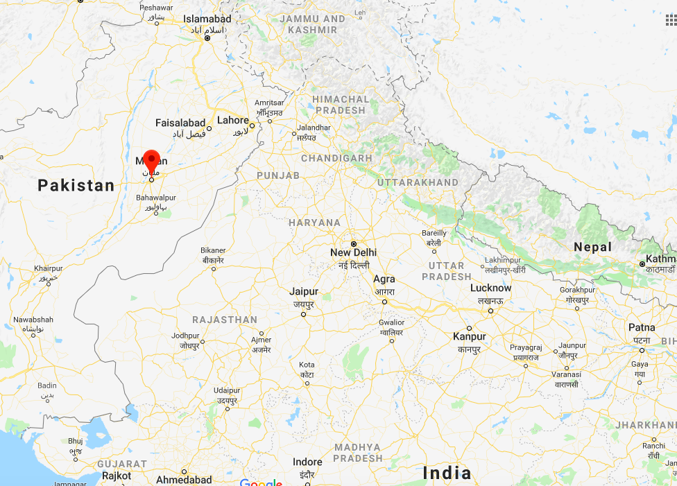

City I am From

Multan is a city in Punjab, Pakistan. Located on the banks of the Chenab River, Multan is Pakistan's 7th largest city, and is the major cultural and economic center of southern Punjab.
Multan's history stretches deep into antiquity. The ancient city was site of the renowned Multan Sun Temple and was besieged by Alexander the Great during the Mallian Campaign. Multan was one of the most important trading centres of medieval Islamic India, and attracted a multitude of Sufi mystics in the 11th and 12th centuries, earning the city the nickname City of Saints.
Multan is one of the oldest cities in the world. It is famous for its saints. Multan is one of the main cities of Pakistan. It ranks fifth in population. Its area is about 133 square km. The nearest river is the Chenab. It is also famous for the shrine of Bahaudin Zakaria and many other shrines. Multan has 6 historic gates like Lohari Gate, Dolut Gate, and Delhi Gate.
Multan has several universities including BZU, and many Virtual University branches. BISE Multan is among the top boards in Pakistan. It's a politically and economically powerful city, surrounded by smaller cities like Muzaffargarh, Lodhran, and Vehari.